| Home | Week 1 | Week 2 | Week 3 | Week 4 | Week 5 | Week 7 | Week 8 | Week 9 | Week 10 |
For this week's task I have used the same three tracks as were used for week 8's task, please find below screenshots of the transformations completed in Sonic Visualiser.
Bellwether - Manwomanchild
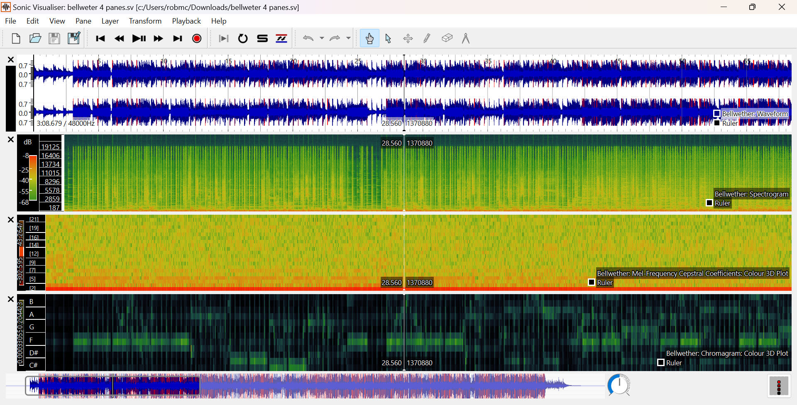Part4 - Hall of Fame
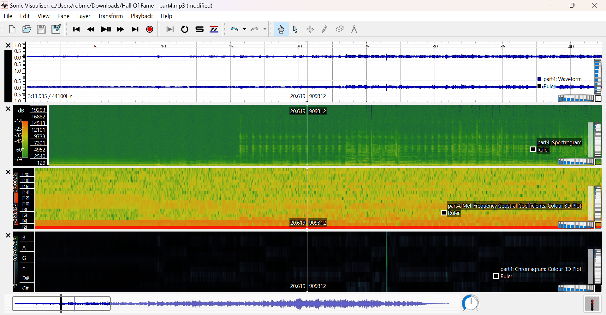Fugue7 - TransFX
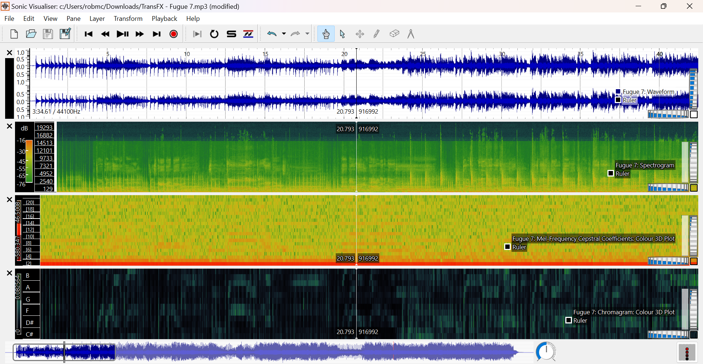Bellwether
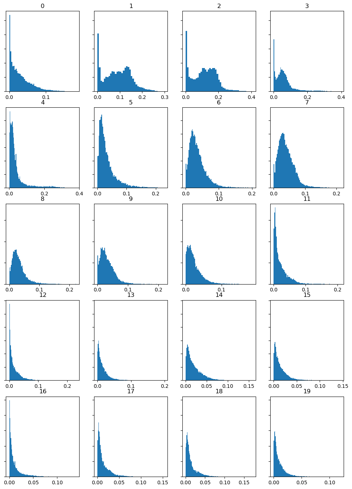Part4
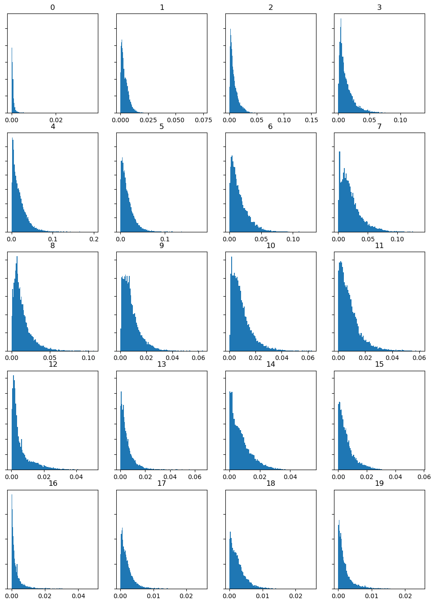Fugue7
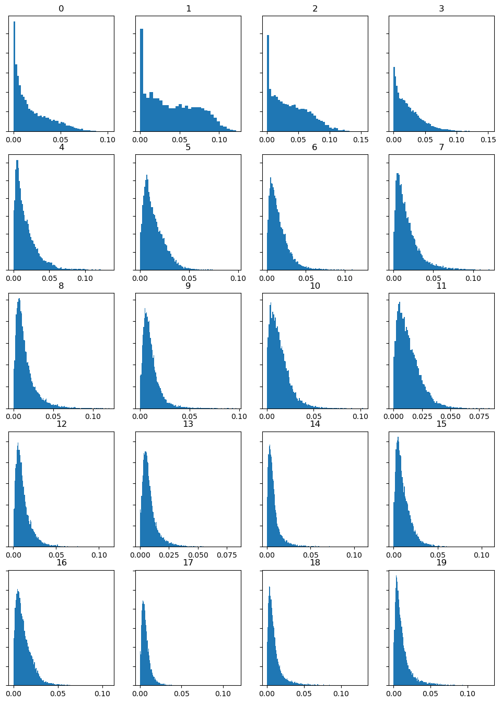Bellwether
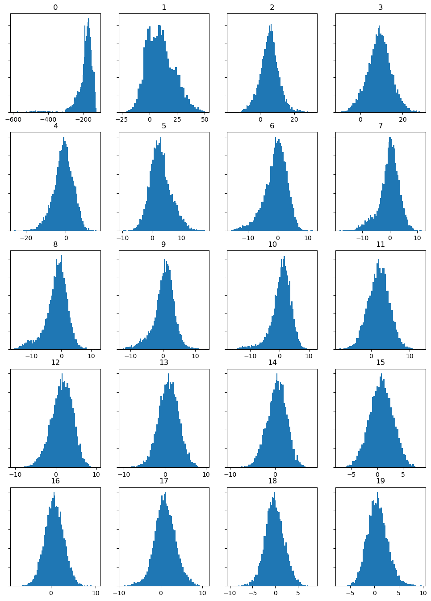Part4
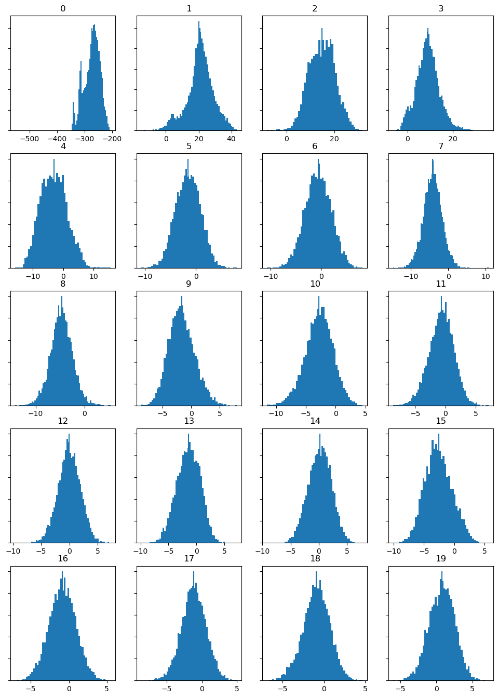Fugue7
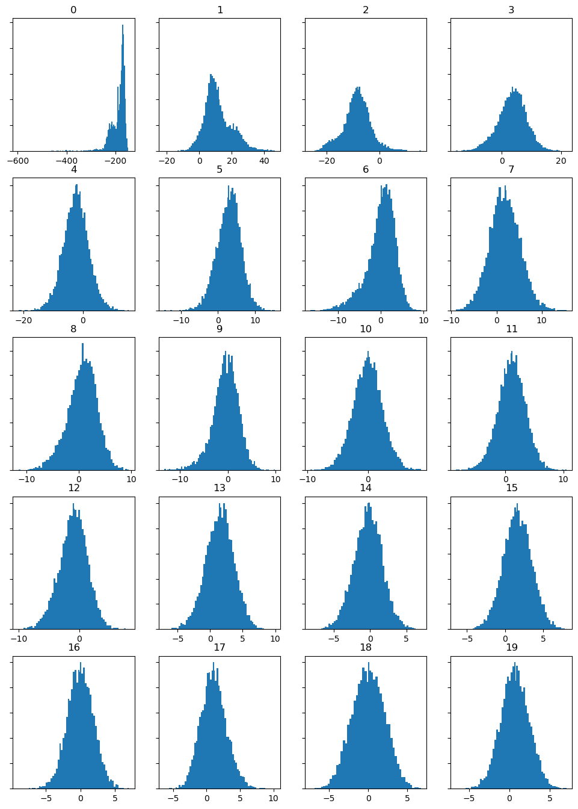Bellwether
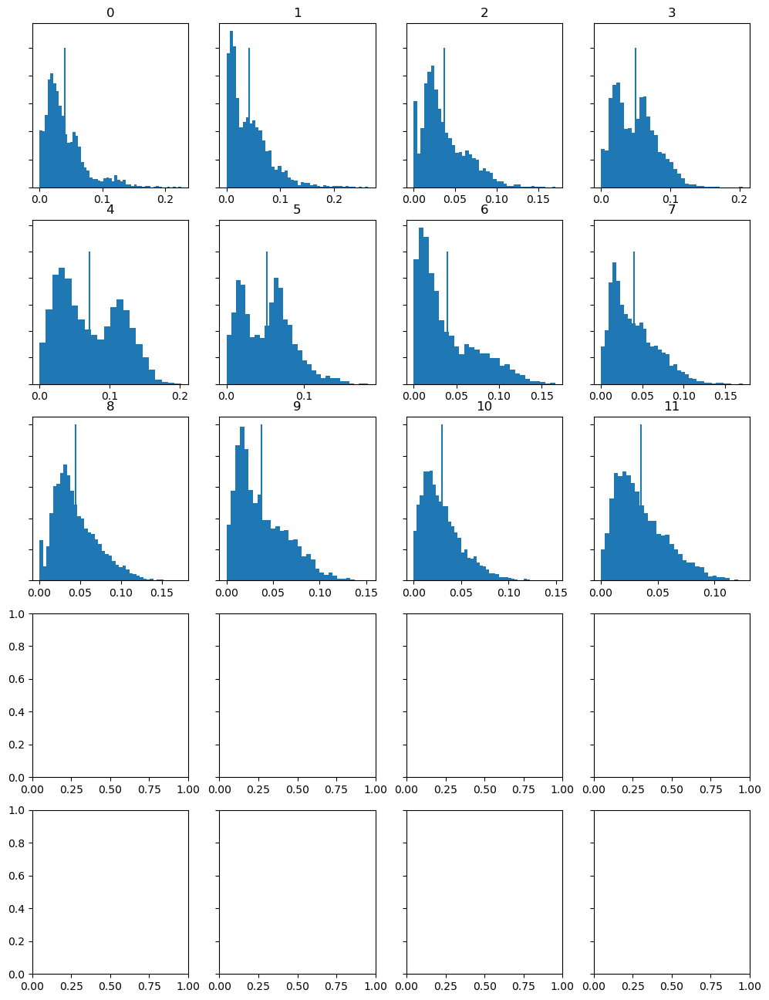Part4
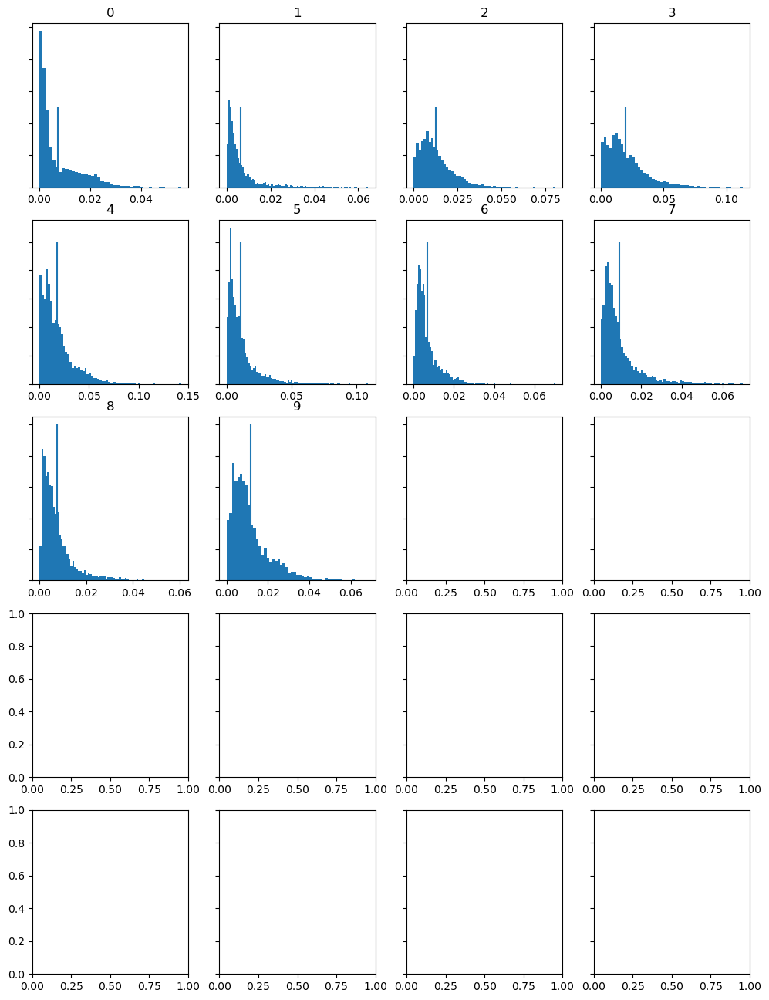Fugue7
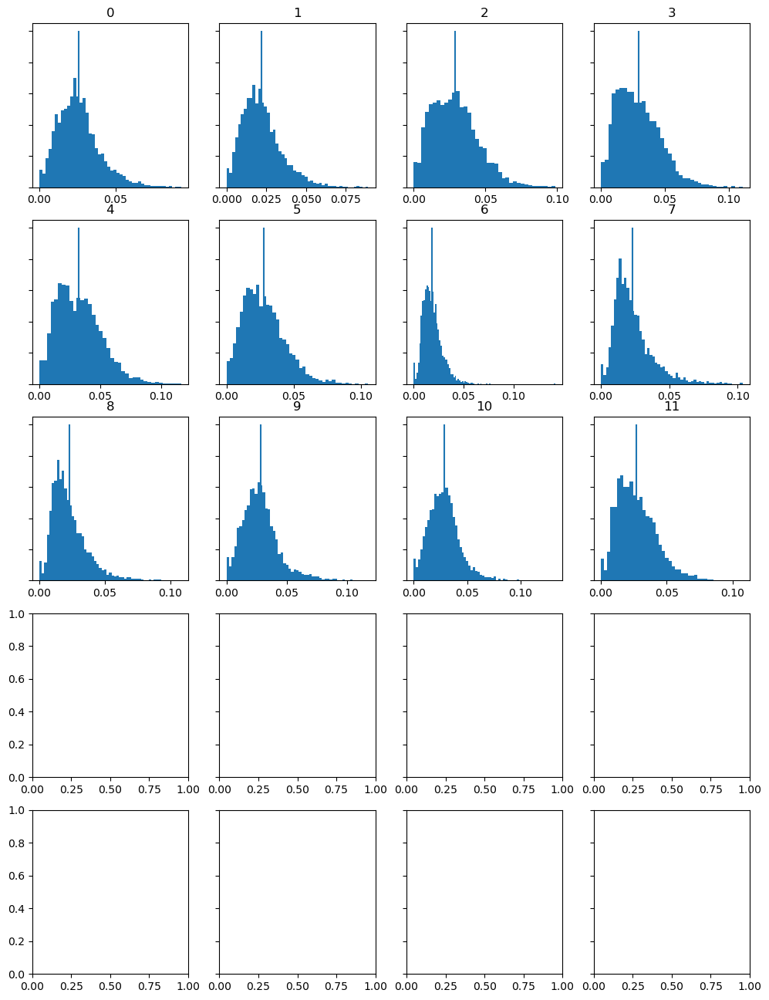For this analysis I am going to be analysing the histograms created from the MFCC's, furthermore I will be comparing the histograms of 'Fugue7' and 'Part4'. Firstly, when comparing the two tracks, the overall shapes look very similiar, this could be due to the fact that MFCC's are used to measure a song's timbre, meaning a song's tone colour or quality, thus, the two tracks are very similar in this regard. The two tracks, which are from different genres, one a synth-pop song and the other a folk-rock, do have differences in the shapes of their histograms. 'Part4', a heavier rock song, has wider peaks than the synth-pop 'Fugue7' due to it having more instrumentation changes and spectral contrast.